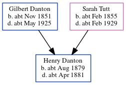

Henry Johnson Danton cAug 1879 - c1881
[ Home ] | [ Calendar ] | [ Surnames Index ] | [ Errors ] | [ Family History ]The child of Gilbert Danton (a gas stoker) and Sarah Tutt, Henry Danton, the first cousin twice-removed on the father's side of Nigel Horne, was born in Ramsgate, Kent, England c. Aug 18791,2,3,4,5 and baptised there at St Luke's Church on 5 Oct 1879. In 1881, he was living in St Lawrence, Thanet, Kent, England1.
He died c. Apr 1881 in Thanet4 and was buried in St Lawrence on 23 Apr 18816.
Parents
- Gilbert Johnson was born c. Nov 1851
- Sarah Maria was born c. Feb 1855
Citations
- 1881 England Census Online publication - Provo, UT, USA: The Generations Network, Inc., 2004. 1881 British Isles Census Index provided by The Church of Jesus Christ of Latter-day Saints © Copyright 1999 Intellectual Reserve, Inc. All rights reserved. All use is subject to the (Relation to Head of House: Son)
- 1891 England Census Online publication - Provo, UT, USA: The Generations Network, Inc., 2005.Original data - Census Returns of England and Wales, 1891. Kew, Surrey, England: The National Archives of the UK (TNA): Public Record Office (PRO), 1891. Data imaged from The National
- England & Wales births 1837-2006 - Findmypast
- England & Wales deaths 1837-2007 - Findmypast
- Kent Burials - Findmypast
- Kent Burials - Findmypast
Media
England & Wales births 1837-2006 - BMD/B/1879/3/AZ/000139/022
England & Wales deaths 1837-2007 - BMD/D/1881/2/AZ/000079/227
Kent Burials - GBPRS/CANT/D/95279590
Family Tree
Map
Generated by ged2site. Last updated on Jul 3, 2024
Known Issues
Year of citation of 1891 England Census is after the death year of 1881
May have been living with mother on 1881, but the addresses don't match or aren't detailed enough to be sure
May have been living with father on 1881, but the addresses don't match or aren't detailed enough to be sure
The census for the year 1891 has been cited, but its information has not been used as a residence